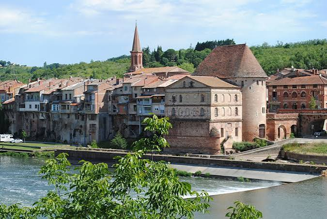

Villemur
La Cité fortifiée
du Tarn


⟹ Tarn · Greniers du Roy · Tour de défense ⟸
Avant Villemur : une forteresse naturelle. La cité est fondée il y a plus de mille ans sur un site exceptionnellement favorable à la défense. Le large fossé du Tarn et deux ravins profonds ouverts sur la rive droite — le fossé Notre-Dame, toujours visible sous sa voûte de briques, et le ravin de Bifranc, comblé après 1930 — formaient des obstacles presque infranchissables. Son nom occitan, Vilamur, signifie d'ailleurs « le village au mur d'enceinte ».
Une place réputée imprenable. Selon la tradition locale, Villemur partage avec le Mont-Saint-Michel l'honneur de n'avoir jamais été prise, y compris par les Anglais pendant la guerre de Cent Ans. La cité contrôle alors un passage stratégique sur le Tarn, entre le Toulousain, l'Albigeois et le Quercy.
XIIe-XIIIe siècles : seigneurs, abbayes et cathares. Une église Saint-Jean, mentionnée en 1124, est donnée à l'abbaye de Moissac par les seigneurs de Villemur. Le pays connaît une forte implantation cathare : une centaine de « parfaits » y sont dénombrés. En 1271, avec le comté de Toulouse, la seigneurie passe à la couronne sous Philippe III le Hardi.

19 octobre 1592 : la bataille de Villemur. Pendant les guerres de Religion, le duc Antoine-Scipion de Joyeuse, chef de la Ligue catholique, assiège la ville avec des renforts espagnols. Défendue par le sire de Rastignac et des troupes auvergnates fidèles à Henri IV, Villemur résiste ; l'armée ligueuse est mise en déroute et Joyeuse périt noyé dans le Tarn.
XVIIe siècle : les Greniers du Roy. Au début du XVIIe siècle, le duc de Lesdiguières fait édifier en brique toulousaine de vastes greniers destinés aux réserves de grain. Ils reviennent au roi Louis XIII en 1621, d'où leur nom de Greniers du Roy. Les remparts sont démantelés, mais la tour de défense garde sa fonction militaire jusqu'en 1631.
<XIXe siècle : les pâtes Brusson et l'électricité. En 1872, la famille Brusson commence à fabriquer des pâtes alimentaires dans le moulin de la tour de défense, puis construit entre 1877 et 1910 une vaste usine sur la rive gauche, mue par l'énergie du Tarn. Elle emploie jusqu'à 700 salariés. Sa centrale hydroélectrique, en service dès 1895, donne l'électricité à Villemur avant même Toulouse ; elle fonctionne toujours.
Mars 1930 : la grande crue du Tarn. L'une des crues les plus meurtrières du XXe siècle en France engloutit la ville et fait six victimes à Villemur. Le pont suspendu de 1834 est emporté. Des plaques rappellent encore, dans le centre-ville, la hauteur atteinte par les eaux ; un nouveau pont suspendu est reconstruit peu après.
XXe siècle : une ville industrielle. En 1941, la Société générale d'équipements, spécialisée dans l'équipement électrique des avions, s'installe à Villemur, alors en zone libre. Devenue Labinal puis intégrée au groupe Safran, elle dépasse 1 000 salariés entre 1960 et le milieu des années 1980. La fermeture de l'usine de connecteurs Molex en 2009 marque fortement la ville ; l'activité aéronautique, elle, se poursuit sur la route de Castres.
Villemur aujourd'hui. Bureau centralisateur de son canton et siège de la communauté de communes du Val'Aïgo, Villemur connaît une forte croissance démographique liée à l'attraction toulousaine, tout en conservant son patrimoine de brique rouge, sa vie commerçante et son lien intime avec le Tarn.
Villemur est une ville que le Tarn a tout à la fois protégée, enrichie et meurtrie : rempart naturel du Moyen Âge, force motrice des usines Brusson, puis fléau de 1930, la rivière reste le fil de toute son histoire.
Repère synthétique — L'Âme des RégionsPour aller plus loin — sources et documentation :
• Mairie de Villemur-sur-Tarn — histoire et patrimoine
• Les Amis du Villemur Historique
• Communauté de communes du Val'Aïgo
• Archives départementales de la Haute-Garonne
• Haute-Garonne Tourisme — découvrir le nord toulousain
• INSEE — Villemur-sur-Tarn
La mémoire de Villemur est liée au roi Henri IV, dont les partisans défendirent la ville en 1592, et au duc Antoine-Scipion de Joyeuse, qui y trouva la mort. Arnaud de Villemur et la famille de La Vie de Villemur, vicomtes du lieu, ont porté le nom de la cité.
Gabriel Lespinasse de Saune (1848-1939), capitaine de vaisseau inhumé à Sayrac, commandait la frégate l'Isère qui transporta la statue de la Liberté de Rouen à New York ; son frère Henri (1850-1929) fut évêque jésuite à Madagascar. Léon Eeckhoutte fut maire de 1947 à 1995 et présida le conseil général de la Haute-Garonne de 1966 à 1988.
Plaques de crue, kiosque à musique, lavoir du Terme et hameaux de Magnanac, Sayrac et du Terme, chacun avec son église — dont celle de Sayrac et son clocher-mur à sept cloches — composent une mémoire locale vivante. Le club de rugby, l'Association sportive villemurienne, joue dans l'enceinte de l'ancien vélodrome.
Accès : Villemur-sur-Tarn se trouve à 30 km au nord-est de Toulouse et à 21 km de Montauban, sur la RD630 (axe Montauban–Castres). La gare la plus proche est Castelnau-d'Estrétefonds (18 km) ; la ligne express Hop!301 rejoint le métro Borderouge en environ 50 minutes.
Office de tourisme : L'office de tourisme du Val'Aïgo organise ponctuellement des visites guidées des monuments de la ville ; la médiathèque est installée dans l'ancienne halle, près de l'hôtel de ville.
Conseil de visite : suivez le Tarn : la rive droite pour les monuments et le centre historique, la rive gauche pour le patrimoine industriel, puis la voie verte pour la nature.